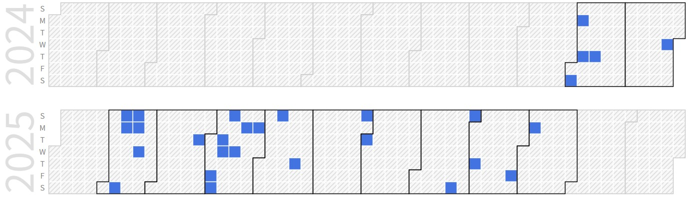

Hoseung Kim (Integrated Ph.D Student)
Integrated Ph.D Course Student (B.S), Embedded System-on-Chip Integrator |
Repository Commit History
|  |
Introduction
Full Bio Sketch
Mr. Kim is currently doing integrated Ph.D degree in Electronics Engineering at Kyungpook National University, Daegu, republic of Korea. His research interests design low-power and high-speed micro-processor architecture, such as accelerator and powerful multi-core processor, for improvements performance of computational devices in various usage conditions based on RISC-V. And, He is interested in designing parallel processing data structure and reordering memory structure based on various computer design architecture for efficient (low power and high performance) system operation. He is pursuing his research to apply specially purposed embedded system on chip devices from customized small-scale application (IOT) to powerful large-scale application (large data processing computation devices). Furthermore, He is seeking flexible Hardware-software friendly system structure to design powerfully optimized system on chip.
For doing this, he is currently studying on the various computer architecture (RISC, CISC), data flow level ? RTL chip design and synthesis (FPGA), low level software algorithm structure (Kernel programming, OS), and bottom-up full stack Soc design (System build). Finally, His research objective is to integrate the low-performance edge devices and high-performance data server cloud for connecting the AI system in characterized embedded device environments. And, He is aimed at the professional of architecture and System designer.
Research Topic
low power high speed CNN accelerator with matrix reordering techniques for small footprint memory access
 In artificial intelligent and big data era, enormous data volumes are used to information expression. the property of this information is multi-dimension structure data set, it can be expressed by matrix or tensor. So various data elements are simultaneously processed at once. With ordinary sequential processing way computer structure, this huge amount of information processing takes too much time and has high order time complexity.
In artificial intelligent and big data era, enormous data volumes are used to information expression. the property of this information is multi-dimension structure data set, it can be expressed by matrix or tensor. So various data elements are simultaneously processed at once. With ordinary sequential processing way computer structure, this huge amount of information processing takes too much time and has high order time complexity.
For efficient matrix/tensor data set processing, used parallelism and independence matrix arithmetic property, matrix operation can be conducted in parallel processing way. By implementing processing unit and memory structure conducted this method, compared to sequential processing way, the number of iterative memory access sequence and ALU operations of same data elements can be drastically reduced. These characteristics naturally can decrease the power consumption of system and increase the operation performance used this hardware module.
Furthermore, embedded system software of this hardware module and developed new compile method, such as pruning, key data extraction, and matrix data compression conceptions, it is possible to minimize the size of data to be processed in advance. So, this algorithm can accelerate and lessen burden hardware processing information data volumes in compile, preprocessing, and operation step. This can eventually enable the minimized hardware module implementation and improve the hardware operation performance.
As a result, High speed and low memory access footprint but low power consumption, namely, highly efficient system module chip for matrix operation can be implemented. This chip is based on RISC-V, this can easily fit in existing hardware board. So, widely used in various situation and hardware device, where huge volumes of matrix/tensor data process needed.
Low power CNN Accelerator Memory Interface with Small Footprint Memory Access
 Original computation devices execute in a sequential manner, fetching instructions and data step by step from memory. The core computation in CNNs is matrix-based, which involves deep loop nests and frequent memory accesses. These characteristics lead to non-linear address calculations and substantial control- and memory-access overhead on general-purpose processors. As a result, sequential processors can consume significant power and create severe bottlenecks at the CPU?memory interface during CNN workloads.
Original computation devices execute in a sequential manner, fetching instructions and data step by step from memory. The core computation in CNNs is matrix-based, which involves deep loop nests and frequent memory accesses. These characteristics lead to non-linear address calculations and substantial control- and memory-access overhead on general-purpose processors. As a result, sequential processors can consume significant power and create severe bottlenecks at the CPU?memory interface during CNN workloads.
To address this, an application-specific CNN accelerator memory interface is required. The proposed Parallel Memory Bank Layer (PMBL) reshapes data layout to reduce the memory-access footprint, reconstructing compressed CNN matrix data into a linear access order. Operation parameters?such as kernel size, input dimensions, and stride?determine the reordering sequence. Leveraging a multi-bank memory structure, PMBL can supply multiple operands simultaneously. Consequently, the accelerator’s memory interface significantly reduces the memory-access footprint and alleviates bottlenecks at the accelerator?memory boundary, leading to lower power consumption and improved CNN performance.
Data Allocation Rearrangement on CNN Accelerator based on Reshaping Systolic Tile Array using Planarized Matrix Reordering Techniques.
 Recently, a wide variety of electronic devices?especially mobile devices?have been built with on-device AI. The prevailing approach, convolutional neural networks (CNNs), reduces to matrix convolution and matrix multiplication; in practice, convolutions can be lowered to matrix multiplications (or sequences of dot products) depending on loop ordering and data layout. However, these workloads are heavy for mobile systems with restricted compute capability. Matrix multiplication is not well suited to strictly sequential processing?which still dominates on resource-constrained mobile devices?because its non-linear memory-access patterns require frequent address calculations and control flow (conditional branches and jumps). This drives up power consumption and depresses performance during AI workloads.
Recently, a wide variety of electronic devices?especially mobile devices?have been built with on-device AI. The prevailing approach, convolutional neural networks (CNNs), reduces to matrix convolution and matrix multiplication; in practice, convolutions can be lowered to matrix multiplications (or sequences of dot products) depending on loop ordering and data layout. However, these workloads are heavy for mobile systems with restricted compute capability. Matrix multiplication is not well suited to strictly sequential processing?which still dominates on resource-constrained mobile devices?because its non-linear memory-access patterns require frequent address calculations and control flow (conditional branches and jumps). This drives up power consumption and depresses performance during AI workloads.
To improve efficiency, the proposed accelerator employs a systolic tile array of multiply-accumulate (MAC) units. The array includes two specialized MAC tile types: performance tiles, which support dual-thread or high-resolution modes and are optimized for throughput, and efficiency tiles, which are optimized for low power. The inherently parallel dataflow of this tile array accelerates matrix multiplication.
Even if the computation runs quickly, it’s meaningless if the data aren’t ready just as fast. To balance compute and I/O in accelerator and memory interface, the accelerator integrates a high-throughput memory interface. A planarized matrix-reordering stage reshapes tensors and redistributes data across banks, converting compressed CNN matrices into contiguous, linear access streams. Operation parameters (e.g., kernel size, input dimensions, stride) determine the reordering schedule. This reduces the memory-access footprint, improves burst efficiency, and supplies multiple operands per cycle.
In conclusion, we aim to reformulate CNN operations as lower-dimensional matrix multiplications to increase processing performance and reduce energy consumption. With this accelerator architecture, our goal is to enhance the efficiency of AI workloads so they run seamlessly even on mobile devices with limited computational resources.
Publications
Conference Publications (SCI 1, KCI 1)
Hoseung Kim and Daejin Park. On Preparation (SCI) IEEE Access, 2025
Hoseong Kim and Daejin Park. On Preparation (KCI) IEMEK Journal of Embedded Systems and Applications, 2025.
Conference Publications (Intl. 3)
Hoseung Kim and Daejin Park. Low-Power High Speed CNN Accelerator with Matrix Reordering Techniques for Small Footprint Memory Access (Under Review) In IEEE International Conference on Artificial Intelligence in Information and Communication (ICAIIC 2025), 2025.
Hoseung Kim and Daejin Park. Low Power CNN Accelerator Memory Interface with Small Footprint Memory Access, In IEEE Symposium on Low-Power and High-Speed Chips and Systems (Flagship Conf. COOLChips), 2025.
Hoseong Kim and Daejin Park. Data Allocation Rearrangement on CNN Accelerator based on Reshaping Systolic Tile Array using Planarized Matrix Reordering Techniques In IEEE International Conference on Embedded MulticoreManycore Systems-on-Chip (Flagship Conf. MCSoC 2025), 2025.
Participation in International Conference
IEEE ICAIIC 2025, Fukuoka, Japan
IEEE COOLChips 2025, Tokyo, Japan
IEEE MCSoC 2025, Singapre, Singapore
Last Updated, 2025.09.09